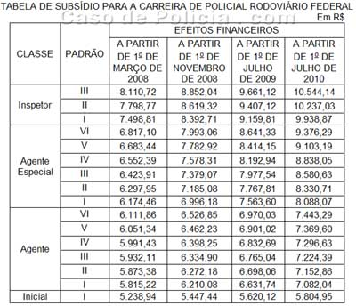

Não custa divulgar que está previsto um novo concurso da Polícia Rodoviária Federal em 2008, já tendo sido autorizado pelo Governo Federal o preenchimento de 3 mil vagas para o cargo de Agente de Polícia Rodoviária Federal na classe inicial. Então vamos registrar aqui o salário inicial, e como baixar provas anteriores com o gabarito.
 A Medida Provisória nº 431 de 14 de maio de 2008, que autorizou a realização do concurso, definiu ainda o nível de escolaridade necessário, mantendo-o como intermediário. Vale dizer que basta o estudo até o 2º grau de instrução para concorrer. Os agentes da PRF estavam tentando fazer com que o requisito passasse a ser 3º grau, mas esta MP pôs um fim ao pleito, ao menos temporariamente.
A Medida Provisória nº 431 de 14 de maio de 2008, que autorizou a realização do concurso, definiu ainda o nível de escolaridade necessário, mantendo-o como intermediário. Vale dizer que basta o estudo até o 2º grau de instrução para concorrer. Os agentes da PRF estavam tentando fazer com que o requisito passasse a ser 3º grau, mas esta MP pôs um fim ao pleito, ao menos temporariamente.
A parte boa é que o salário vai aumentar um pouquinho. Os vencimentos da PRF, que na verdade são subsídios, foram reajustados com valores retroativos a 1º de março de 2008, até o fim do plano, em 1º de julho de 2010. Veja abaixo a tabela de salários dos policiais rodoviários federais :
Quem entrar agora vai receber R$ 5.238,94, e ao final do período de estágio probatório, que dura 3 anos, será promovido de classe e receberá o salário de R$ 7.082,04.

Se é sua intenção se tornar um Agente da PRF, comece a estudar logo, baixando as provas do concurso anterior, de 2003 e 2007, com gabarito, através deste link. Faça o download para conferir o nível de seus conhecimentos atuais ou mesmo direcionar os estudos. E boa sorte, candidato!